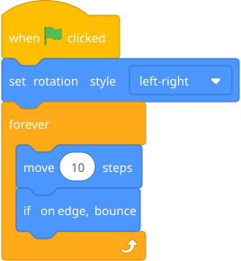
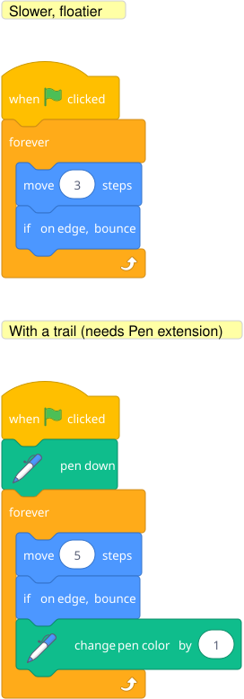

Open with a problem: "Make the cat bounce back and forth across the screen forever." Let him try it with sequences first. He'll start copy-pasting move 10 steps blocks. After 30 seconds of this, he'll feel the pain. Now introduce forever and repeat. The relief of solving a tedious problem with an elegant tool is addictive.

That's it — three blocks inside a forever and the ball bounces endlessly. The set rotation style keeps the sprite from flipping upside down (without it, the cat goes belly-up when it bounces, which is funny but distracting).
Blocks to point out: forever is under Control — it's a loop that never stops. if on edge, bounce is a single block under Motion that handles all the edge detection. set rotation style is also under Motion — try all three options and see what they do.
